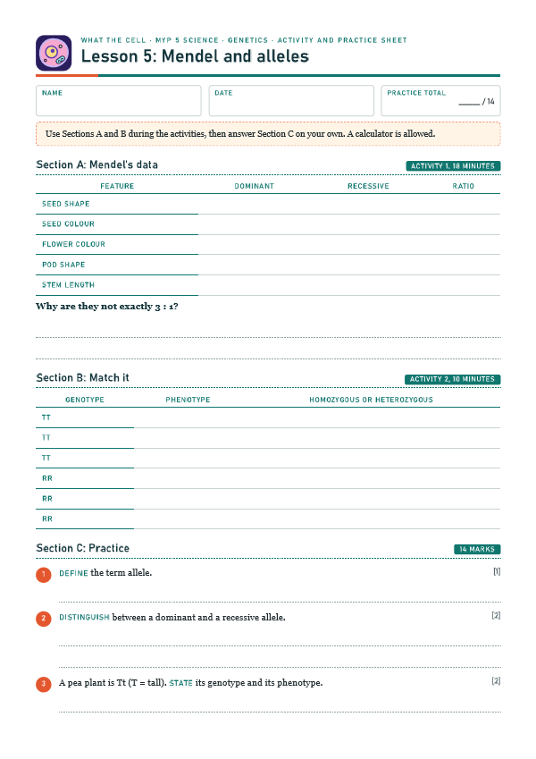

By the end of the lesson you can
- Outline Mendel's experiments with pea plants
- Use the words allele, dominant, recessive, genotype and phenotype correctly
- Calculate ratios from Mendel's results
- Distinguish between homozygous and heterozygous
Keys: arrows or a presentation clicker move the slides, F for full screen. Slides with a red dot have a video or simulation.
Videos (all 5 minutes or less)
- 2:30
Gregor Mendel's Pea Experiment
Pat Bradley. While you watch: What did Mendel do to control which plants bred? Slide 9.
Simulations
- Lab
Print and practise

Activity and practice sheet
Used in the lesson’s activities, with practice questions. Your teacher has the answers.
Download (PDF)Lesson 5 slides
All 21 slides in one file, to read again or print. The video buttons on the slides open YouTube.
Download the slides (PDF)Revising? The Revision tab on the unit page has the unit notes and review.
Class activity pack
Everything to print for the lesson’s activities: picture cards, sorting mats, station cards with their kit lists, and the teacher’s set-up notes. Print it before class.
Download the activity pack (PDF)Notes: Mendel and alleles
allele
One version of a gene. You inherit one allele of each gene from each parent.. For example: T and t are alleles of the height gene.
gamete
A sex cell (egg, sperm or pollen) with only one allele of each gene. For example: pollen carries T or t.
genotype and phenotype
The genotype is the pair of alleles (TT, Tt or tt); the phenotype is the feature they produce (tall or short). Two genotypes can give the same phenotype.. For example: TT and Tt plants are both tall.
pure-breeding
Always gives offspring like itself because it is homozygous. For example: Mendel's TT and tt plants.
segregation
The two alleles of a gene separate when gametes are made, so each gamete has just one. For example: a Tt plant makes T pollen and t pollen in equal numbers.
Key words
| allele | one version of a gene |
|---|---|
| dominant | shows with one copy; capital letter |
| recessive | shows only with two copies; small letter |
| genotype | the alleles an organism has, e.g. Tt |
| phenotype | the feature produced, e.g. tall |
| homozygous | two identical alleles, e.g. TT or tt |
| heterozygous | two different alleles, e.g. Tt |